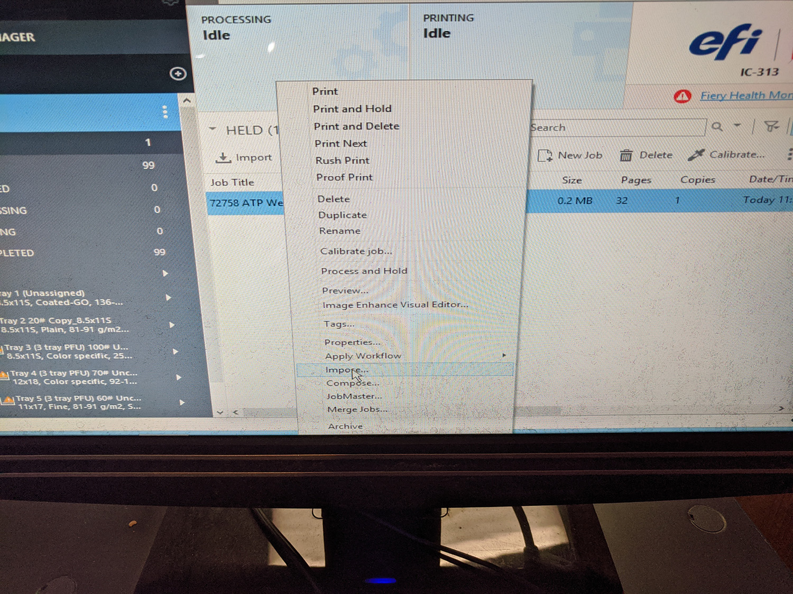

If new month, create new job folder. Copy over Links folder from previous month. Otherwise, go straight to step 2.
Create a folder for current week's welcome kit using naming convention "<mm.dd.yy>".
Copy template fie from previous week (or previous month). Rename using naming convention "<job number> ATP Welcome Ltr <mm.dd.yy>".
Move Excel file mailing list into current week folder.
Open mailing list and select all records.
Click on Sort & Filter, select Custom Sort. Make sure "My data has headers" is checked. Under "Sort By" select "insert".
Create a new column called "order", select the column and right click. Select "format cells", select "Text" under category and click OK.
Enter "001" and "002" in first two rows, and pull down to number all rows in mailing list. Make sure that the total number of records matches the job jacket.
Next, select the "startDate" row,right click and select "format cells" again. Under Category, select "Date" and select the month, date and year format (example March 14, 2012).
Save the updated Excel file as a CSV (comma delimited) file with the naming convention "<job number> ATP Welcome List <mm.dd.yy>.csv".
Open up the Indesign template file. Open the Data Merge tab, click on dropdown list in top right corner and then click on "Select Data Source". Click OK in alert box.
Navigate to the current folder, select the mailing list saved in step 10, and click OK in the next box. check "preview" in the bottom corner of the Data Merge tab. Mailing list headers should match template, with content matching the first record.
Click on the dropdown list in top right corner of the Data Merge tab, click on "Create Merged Document", make sure "All Records" is checked in next box, and hit OK. If everything is correct, an alert box with the text "No overset text was generated when merging records" should appear. Click OK.
Save the merged file as "<job number> ATP Welcome Ltr <mm.dd.yy>merged" (add "merged" to the end of the file name saved in step 3.)
Scroll through merged document to confirm that the number of pages matches the expected number of records, and that there are no unexpected reflow issues.
Select File>Export or Cntrl-E, to export to PDF. Click Save, and in the Export Adobe PDF dialog box click on Preset and scroll down to “Fiery Optimized wBleed & Crops. Hit OK to save PDF.
When PDF is created, it should be automatically opened. Scroll through pages to ensure it’s correct.
Drag and drop the PDF file to the Fiery Command Workstation app “Held” hotfolder.
Load 12x18 70# uncoated text into the printer.
Right click on PDF file in Fiery Command Workstation at Printer, and select “Impose”. 
In Imposition window, click on the Template dropdown and scroll down to ATP Welcome Kit. This preset imposes the PDF into a 4up imposition with crops & bleed for a 12x18 sheet.
Close and save the imposition file. Delete the original file, it won’t be printed. Original file should still be highlighted.
Double click on imposed file. In the Job Properties window that appears, click on the Quick Access tab. In the Face dropdown list, select Face up - normal order. Under the paper catalog, select the 70# Uncoated Text that was loaded in step 19. Click on Print to run job.